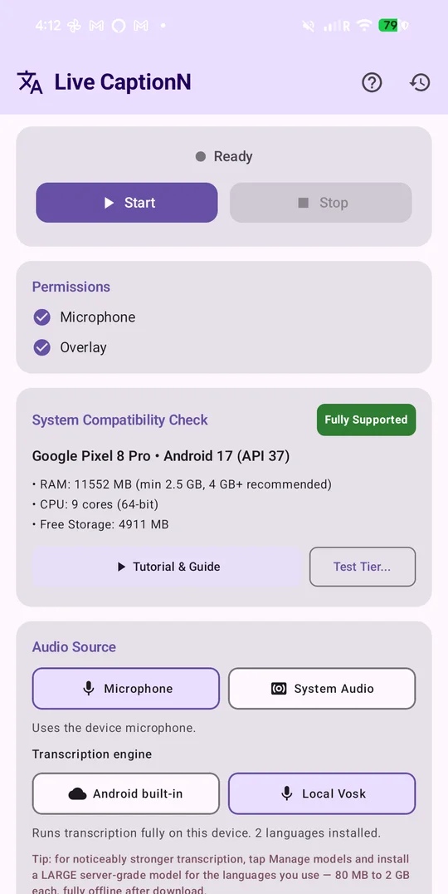

Step 1
Allow two permissions
Open the app. In the Permissions card tap Grant next to Microphone and Overlay (Android calls it “Display over other apps”). The caption window cannot float above other apps without the overlay permission, and the mic cannot be heard without the microphone one.
The Start button stays grey until both are granted and a speech model for your source language is installed. English and Vietnamese models come built in, so on most phones Start lights up as soon as the permissions are given.
The System Compatibility Check card tells you whether your phone can run on-device recognition. “Fully Supported” means you can leave everything on the defaults.